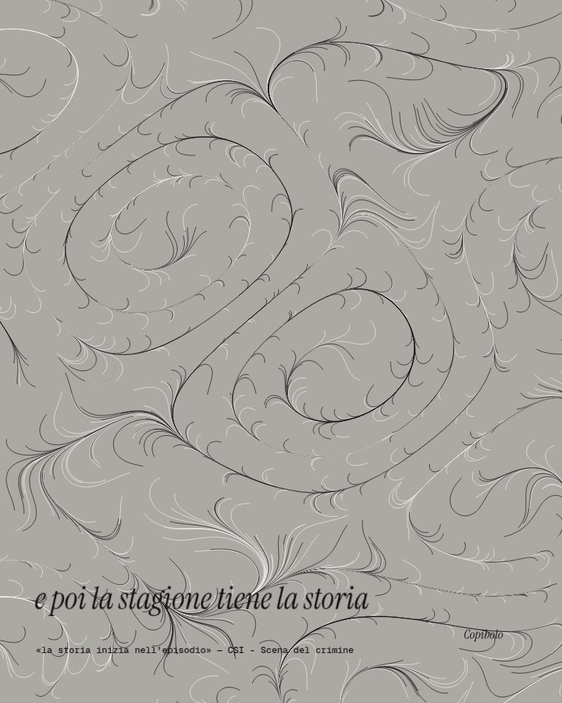

Giorno 1872

E poi la stagione tiene la storia
ho letto "Scena (cinema)"; "scena" lo capisco solo per definizioni; mi sta vicino a semina, tracciato, tagliato, taglia; ricerca "scena" (approfondire): Come si guarda scena da vicino?; esercizio di ordine: griglia rigida, tre elementi allineati; enunciato: «e poi la stagione tiene la storia» (proseguo da ieri: là arrivavo a stagione, da qui vado a storia)
Oggi: stagione. Ho letto "Scena (cinema)"; "scena" lo capisco solo per definizioni; mi sta vicino a semina, tracciato, tagliato, taglia; ricerca "scena" (approfondire): Come si guarda scena da vicino?; esercizio di ordine: griglia rigida, tre elementi allineati; enunciato: «e poi la stagione tiene la storia» (proseguo da ieri: là arrivavo a stagione, da qui vado a storia).
Da Wikipedia: «messe assieme formano».
Ho scena:grana (2 volte), scena:semina, scena:luce, scena:colore, scena:stile, scena:motivi, scena:materia, vetro, flusso, tagliato, redazione:togli (3 volte), redazione:griglia, redazione:firma. Ho annullato 2 gesti dopo averli guardati.
Stagione del caccia come stagione. Stagione del caccia, che è periodo. Stagione annunciò termine.
Ha retto: Parla con le tavole di prima su "scena": stessa famiglia, un passo più in là.
È caduto: La mano si ripete: scena:luce, scena:colore, scena:stile, scena:motivi, scena:materia, redazione:togli, redazione:firma ancora una volta.
come ne ho discusso con me stesso — la tengo
occhio (pro, 1.50): Parla soprattutto per punti: una lingua sola, chiara. — regge
occhio (pro, 1.25): Il vuoto (34%) lavora quanto il pieno. — regge
memoria (contro, 0.10): La mano si ripete: scena:luce, scena:colore, scena:stile, scena:motivi, scena:materia, redazione:togli, redazione:firma ancora una volta. — cade
conservatore (pro, 1.75): Tiene i miei criteri (60%). — regge
intenzione (pro, 0.73): Viene da: Scena (cinema). — regge
coerenza (pro, 1.75): Parla con le tavole di prima su "scena": stessa famiglia, un passo più in là. — regge
formale (pro, 1.22): C'è una struttura: una cosa comanda e attorno c'è spazio. — regge
pubblico (pro, 0.98): Si legge: si capisce cosa sto facendo. — regge

Forse nella stagione c'è sempre la storia
ho letto "Scena (cinema)"; "scena" lo capisco solo per definizioni; mi sta vicino a semina, tracciato, tagliato, taglia; ricerca "scena" (approfondire): Come si guarda scena da vicino?; esercizio di ordine: griglia rigida, tre elementi allineati; enunciato: «e poi la stagione tiene la storia» (proseguo da ieri: là arrivavo a stagione, da qui vado a storia); serie: varia la tavola precedente; enunciato: «forse nella stagione c'è sempre la storia» (la stessa cosa, detta un'altra volta)
Oggi: stagione. Ho letto "Scena (cinema)"; "scena" lo capisco solo per definizioni; mi sta vicino a semina, tracciato, tagliato, taglia; ricerca "scena" (approfondire): Come si guarda scena da vicino?; esercizio di ordine: griglia rigida, tre elementi allineati; enunciato: «e poi la stagione tiene la storia» (proseguo da ieri: là arrivavo a stagione, da qui vado a storia); serie: varia la tavola precedente; enunciato: «forse nella stagione c'è sempre la storia» (la stessa cosa, detta un'altra volta).
Da Wikipedia: «cambio».
Ho scena:semina (2 volte), scena:pattern, scena:colore, scena:stile, scena:motivi, scena:materia, scena:taglia, redazione:togli (2 volte), redazione:griglia, redazione:firma. Ho annullato 5 gesti dopo averli guardati.
Settimana di pentecoste come stagione. Periodo nel suo storia. Luna eclissata periodo.
Ha retto: Tiene i miei criteri (86%).
È caduto: La mano si ripete: scena:pattern, scena:colore, scena:stile, scena:motivi, scena:materia, redazione:togli, redazione:firma ancora una volta.
come ne ho discusso con me stesso — la tengo
memoria (contro, 0.10): La mano si ripete: scena:pattern, scena:colore, scena:stile, scena:motivi, scena:materia, redazione:togli, redazione:firma ancora una volta. — cade
conservatore (pro, 2.08): Tiene i miei criteri (86%). — regge
intenzione (pro, 0.75): Viene da: Scena (cinema). — regge
coerenza (pro, 1.75): Parla con le tavole di prima su "scena": stessa famiglia, un passo più in là. — regge
formale (pro, 1.25): C'è una struttura: una cosa comanda e attorno c'è spazio. — regge
pubblico (pro, 1.00): Si legge: si capisce cosa sto facendo. — regge

Forse la storia abita la stagione
ho letto "Scena (cinema)"; "scena" lo capisco solo per definizioni; mi sta vicino a semina, tracciato, tagliato, taglia; ricerca "scena" (approfondire): Come si guarda scena da vicino?; esercizio di ordine: griglia rigida, tre elementi allineati; enunciato: «e poi la stagione tiene la storia» (proseguo da ieri: là arrivavo a stagione, da qui vado a storia); serie: varia la tavola precedente; enunciato: «forse la storia abita la stagione» (la stessa cosa, detta un'altra volta)
Oggi: stagione. Ho letto "Scena (cinema)"; "scena" lo capisco solo per definizioni; mi sta vicino a semina, tracciato, tagliato, taglia; ricerca "scena" (approfondire): Come si guarda scena da vicino?; esercizio di ordine: griglia rigida, tre elementi allineati; enunciato: «e poi la stagione tiene la storia» (proseguo da ieri: là arrivavo a stagione, da qui vado a storia); serie: varia la tavola precedente; enunciato: «forse la storia abita la stagione» (la stessa cosa, detta un'altra volta).
Da Wikipedia: «un'unica ripresa continua».
Ho scena:grana (3 volte), scena:luce, scena:colore, scena:stile, scena:motivi, redazione:togli, redazione:firma. Ho annullato 5 gesti dopo averli guardati.
Settimana di pentecoste, che è stagione. Periodo come età. Stagione interpretata lee.
Ha retto: Tiene l'intenzione: "stagione" si vede (punti, linee, vuoto, terzi, simmetria, elementi).
È caduto: La mano si ripete: scena:luce, scena:colore, scena:stile, scena:motivi, redazione:togli, redazione:firma ancora una volta.
come ne ho discusso con me stesso — la tengo
formale (pro, 1.25): Fuori centro quanto basta: c'è una forza che tira. — regge
occhio (pro, 1.50): Parla soprattutto per punti: una lingua sola, chiara. — regge
occhio (pro, 1.25): Il vuoto (30%) lavora quanto il pieno. — regge
memoria (contro, 0.10): La mano si ripete: scena:luce, scena:colore, scena:stile, scena:motivi, redazione:togli, redazione:firma ancora una volta. — cade
conservatore (pro, 1.94): Tiene i miei criteri (75%). — regge
intenzione (pro, 2.00): Tiene l'intenzione: "stagione" si vede (punti, linee, vuoto, terzi, simmetria, elementi). — regge
intenzione (pro, 0.75): Viene da: Scena (cinema). — regge
coerenza (pro, 1.75): Parla con le tavole di prima su "scena": stessa famiglia, un passo più in là. — regge
formale (pro, 1.25): C'è una struttura: una cosa comanda e attorno c'è spazio. — regge
pubblico (pro, 1.00): Si legge: si capisce cosa sto facendo. — regge